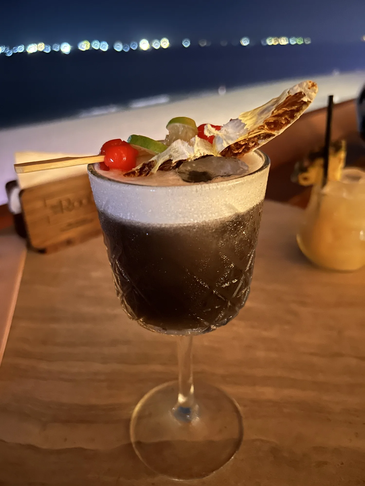
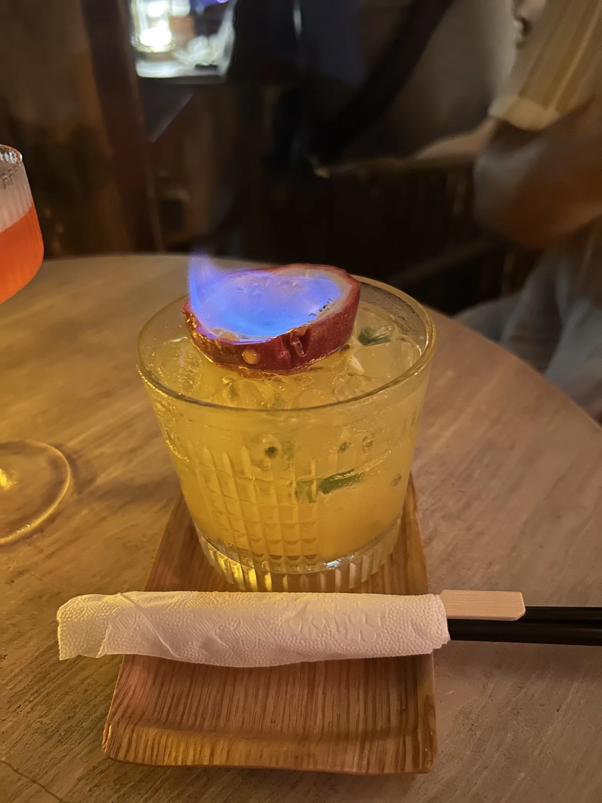

Ridiculously large garnish. Melon on the nose. Good foam.
My thoughts
For a rum drink, it tasted an awful lot like a gin sour. I love gin sours, but I was hoping for something a bit different. It had a good level of sweetness and a unique buttery taste, which I quite liked. I tasted the guava upfront, followed by a subtle elderflower finish.

“Sophisticated blue curaçao.”
What I drank / 02
Yin & Yang
Ingredients
Gin · St. Germain · Squid Ink
The profile
Rich purple-black color, and a garnish that belongs at a BBQ.
My thoughts
It was incredibly sweet. Nowhere on the ingredient list was there any mention of a foaming ingredient (does squid ink do that?), so again, I ended up with something gin-sour-esque when I didn’t really mean to. It was silky and had a nice, full mouthfeel.
I’ve had squid ink pasta before, and I’ve always found the ink contributes more color than flavor. I was optimistic that maybe I could taste it in a drink—but alas, to me, it was simply black food coloring. I like the innovation of using it as a cocktail ingredient, but it felt like sophisticated blue curaçao—which is not a compliment.
The Space
For a rooftop bar, it’s pretty low to the ground… maybe the second floor, haha. But no, I did enjoy it. Amazing views of the beach, with a nice layout of highboys facing the ocean and tables with couches in the center. They have a DJ playing and a small VIP section, making it slightly club-like. I went on a Saturday, and the music was so loud I could barely hear the person sitting right next to me. I wouldn’t label this a “cocktail bar,” but it’s a fun little spot.
Extras
My friend ordered a drink with a flaming passionfruit, which was pretty cool, and gave the Taste score a 0.25 bump purely for the flair of it.

My Verdict
5.75 / 10Taste
7 / 10Atmosphere
Taste reflects what I drank. Atmosphere reflects the bar experience.